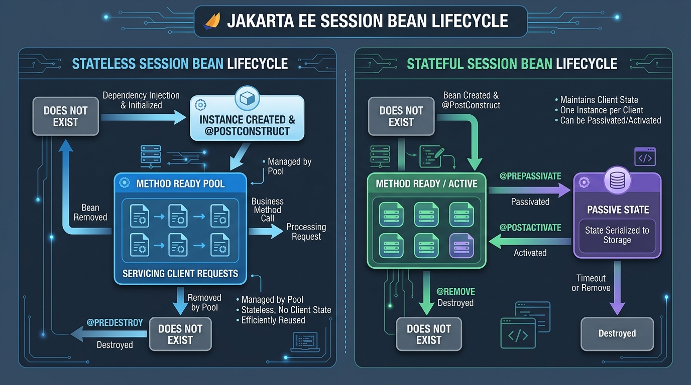

<title>Session Beans Explained</title>
<meta name="description" content="Stateless, stateful and singleton session beans — with real analogies and runnable examples.">
<link rel="stylesheet" href="assets/css/styles.css">
<script>window.PAGE = "03-session-beans";</script>

<main class="page">

  <h1>Unit 03 · Session beans: stateless, stateful, singleton</h1>
  <p class="lede">A <strong>session bean</strong> is a class where you put your business logic — the
    actual work your app does. The container runs it for you. There are three flavours, and picking
    the right one is 90% of the skill.</p>

  <div class="callout">
    <span class="callout__i">↩︎</span>
    <div class="callout__b"><b>Recap</b>
      Unit 02: Jakarta EE = write a plain class, add annotations, let the <em>container</em> on the
      <em>server</em> (WildFly) handle security, transactions and pooling. A <em>bean</em> is just a
      container-managed class.</div>
  </div>

  <span class="eyebrow">concept</span>
  <h2>The one question that decides everything</h2>
  <p><strong>“Between two calls from the same user, does this object need to <em>remember</em> anything?”</strong></p>
  <div class="tablewrap"><table>
    <thead><tr><th>Your answer</th><th>Use</th><th>Annotation</th><th>Everyday picture</th></tr></thead>
    <tbody>
      <tr><td>No — every call stands alone</td><td><strong>Stateless</strong></td><td><code>@Stateless</code></td><td>A bank teller at a counter. Serves you, then the next person, remembers nothing.</td></tr>
      <tr><td>Yes — it’s a multi-step conversation with <em>one</em> user</td><td><strong>Stateful</strong></td><td><code>@Stateful</code></td><td>Your personal account officer who remembers your whole file during the meeting.</td></tr>
      <tr><td>One shared thing for the <em>whole application</em></td><td><strong>Singleton</strong></td><td><code>@Singleton</code></td><td>The branch manager — there is exactly one, everyone shares them.</td></tr>
    </tbody>
  </table></div>

  <figure>
    
    <figcaption><b>Takeaway:</b> stateless beans live in a <em>shared pool</em> and are handed out per
      call. A stateful bean is <em>yours</em> for the whole conversation and can be parked on disk
      (“passivated”) when idle.</figcaption>
  </figure>

  <span class="eyebrow">concept</span>
  <h2>1 · Stateless — the default choice</h2>
  <p>No memory between calls. The container keeps a <strong>pool</strong> of ready instances and lends
    one to whichever request arrives, then takes it back. That’s why a handful of instances can serve
    thousands of users. Reach for this unless you have a specific reason not to.</p>

  <div class="code-head">CalculatorRemote.java — the contract</div>
  <pre><code>package com.zentech.calculator;

import jakarta.ejb.Remote;

@Remote                       // callable from other JVMs (see Unit 10)
public interface CalculatorRemote {
    int add(int a, int b);
    int subtract(int a, int b);
    int multiply(int a, int b);
    double divide(double a, double b);
}</code></pre>

  <div class="code-head">CalculatorBean.java — the logic</div>
  <pre><code>package com.zentech.calculator;

import jakarta.ejb.Stateless;

@Stateless                                   // "container: manage me as a stateless bean"
public class CalculatorBean implements CalculatorRemote {

    @Override public int add(int a, int b)       { return a + b; }
    @Override public int subtract(int a, int b)  { return a - b; }
    @Override public int multiply(int a, int b)  { return a * b; }

    @Override public double divide(double a, double b) {
        if (b == 0) {
            throw new ArithmeticException("Cannot divide by zero!");
        }
        return a / b;
    }
}</code></pre>

  <div class="bench" data-run="calc">
    <div class="bench__head"><span class="dot"></span><span class="kind">try it</span><span class="mode">live — edit the numbers</span></div>
    <pre class="bench__code" contenteditable="true" spellcheck="false"><code>int a = 10;
int b = 5;
// calls: add, subtract, multiply, divide
</code></pre>
    <div class="bench__controls">
      <button class="btn-run" type="button">Run</button>
      <button class="btn-ghost" type="button" data-reset>Reset</button>
      <span class="bench__hint">Try <code>b = 0</code> to trigger the divide-by-zero exception.</span>
    </div>
    <pre class="bench__out" aria-live="polite"></pre>
  </div>

  <div class="callout callout--mistake">
    <span class="callout__i">⚠️</span>
    <div class="callout__b"><b>What changed from the original notes</b>
      The old Session 1&amp;2 client code showed <code>new CalculatorBean()</code>. <em>Never do that.</em>
      You don’t create beans — the container does. The correct way is to let the container hand you one
      (<code>@Inject</code> / <code>@EJB</code>) or to look one up by name (JNDI). Both are covered in
      <a href="05-jndi-and-resources.html">Unit 05</a>. Treat any <code>new SomeBean()</code> you see as
      pseudocode.</div>
  </div>

  <div class="callout callout--tip">
    <span class="callout__i">💡</span>
    <div class="callout__b"><b>“Stateless” has a trap</b>
      You <em>can</em> write a field in a stateless bean, but its value is only trustworthy <em>during
      one method call</em>. The next call may get a different pooled instance. Never rely on a field
      surviving between calls in a stateless bean.</div>
  </div>

  <span class="eyebrow">concept</span>
  <h2>2 · Stateful — for multi-step conversations</h2>
  <p>One instance is dedicated to one client and <strong>remembers its fields</strong> across calls
    until the client is done. Perfect for a shopping cart, a checkout wizard, or a multi-page loan
    application. Costs more memory, so use it only when the conversation genuinely spans calls.</p>

  <div class="code-head">RunningTotalBean.java</div>
  <pre><code>package com.zentech.calculator;

import jakarta.ejb.Stateful;
import jakarta.ejb.Remove;

@Stateful
public class RunningTotalBean {

    private int total = 0;          // THIS survives between calls, for this one client

    public int add(int n) {
        total += n;
        return total;
    }

    @Remove                         // caller invokes this to end the conversation
    public void finish() {
        // container destroys this instance right after
    }
}</code></pre>

  <div class="bench" data-run="canned">
    <div class="bench__head"><span class="dot"></span><span class="kind">try it</span><span class="mode">replay — real server output</span></div>
    <pre class="bench__code"><code>// client: same stateful bean instance across four calls
cart.add(5);     // -> ?
cart.add(10);    // -> ?
cart.add(3);     // -> ?
cart.add(100);   // -> ?
cart.finish();   // ends the session</code></pre>
    <div class="bench__controls">
      <button class="btn-run" type="button">Run</button>
      <span class="bench__hint">Notice the total <em>accumulates</em> — the bean remembered.</span>
    </div>
    <script type="text/plain" class="bench__canned">
add(5)   -> running total = 5
add(10)  -> running total = 15
add(3)   -> running total = 18
add(100) -> running total = 118
finish() -> @Remove called; container destroyed this instance
    </script>
    <pre class="bench__out" aria-live="polite"></pre>
  </div>

  <div class="callout callout--analogy">
    <span class="callout__i">🎂</span>
    <div class="callout__b"><b>Analogy</b>
      Ordering a custom cake. The baker remembers your name, your design and your pickup time across
      every phone call — until you collect the cake, and then the order is closed. That “remembering
      across the whole exchange” is <em>conversational state</em>.</div>
  </div>

  <span class="eyebrow">concept</span>
  <h2>3 · Singleton — one shared instance</h2>
  <p>Exactly <strong>one</strong> instance for the entire application, shared by every user at once.
    Good for a cache, a counter, app-wide config, or startup work. Because many threads hit the same
    object, you must say who’s allowed in at the same time with <code>@Lock</code>.</p>

  <div class="code-head">HitCounterBean.java</div>
  <pre><code>import jakarta.ejb.Singleton;
import jakarta.ejb.Startup;
import jakarta.ejb.Lock;
import jakarta.ejb.LockType;

@Singleton
@Startup                                 // build it when the app starts, before any request
public class HitCounterBean {

    private long hits = 0;

    @Lock(LockType.WRITE)                 // only ONE thread inside at a time (it changes state)
    public long recordHit() {
        return ++hits;
    }

    @Lock(LockType.READ)                  // MANY threads may read at once (no change)
    public long total() {
        return hits;
    }
}</code></pre>

  <div class="bench" data-run="canned">
    <div class="bench__head"><span class="dot"></span><span class="kind">try it</span><span class="mode">replay — real server output</span></div>
    <pre class="bench__code"><code>// three different users hit the site "at the same time"
userA -> recordHit()
userB -> recordHit()
userC -> recordHit()
anyone -> total()</code></pre>
    <div class="bench__controls">
      <button class="btn-run" type="button">Run</button>
      <span class="bench__hint">@Lock(WRITE) serialises the three increments; nothing is lost.</span>
    </div>
    <script type="text/plain" class="bench__canned">
[server] @Startup: HitCounterBean created before first request
userA recordHit() -> 1
userB recordHit() -> 2   (waited for userA to leave the WRITE lock)
userC recordHit() -> 3   (waited for userB)
total() -> 3             (READ lock: userA, userB, userC could all read together)
    </script>
    <pre class="bench__out" aria-live="polite"></pre>
  </div>

  <span class="eyebrow">terminal</span>
  <h2>Build &amp; deploy this bean</h2>
  <p>The real workflow for any of the beans above:</p>
  <div class="terminal" data-terminal="deploy">
    <div class="terminal__bar"></div>
    <div class="terminal__screen"></div>
    <div class="terminal__inputline"></div>
  </div>
  <p style="font-size:.9rem;color:var(--ink-faint)">Try: <code>mvn clean package</code>, then
    <code>jboss-cli.sh --connect</code>, then <code>deploy target/hello-ejb.war</code>. Watch for the
    <code>java:global/...</code> line — that name is how a client finds the bean (Unit 05).</p>

  <span class="eyebrow">concept</span>
  <h2>Side by side</h2>
  <div class="tablewrap"><table>
    <thead><tr><th></th><th>Stateless</th><th>Stateful</th><th>Singleton</th></tr></thead>
    <tbody>
      <tr><td>Instances</td><td>A pool (many)</td><td>One per client</td><td>Exactly one, ever</td></tr>
      <tr><td>Remembers fields between calls?</td><td>No</td><td>Yes, per client</td><td>Yes, shared by all</td></tr>
      <tr><td>Serves</td><td>Any client, one call at a time</td><td>One client, whole conversation</td><td>All clients at once</td></tr>
      <tr><td>Can be parked on disk (passivated)?</td><td>No</td><td>Yes</td><td>No</td></tr>
      <tr><td>Typical use</td><td>Calculations, lookups, DB operations</td><td>Cart, wizard, loan application</td><td>Cache, counter, config, startup</td></tr>
    </tbody>
  </table></div>

  <span class="eyebrow">concept</span>
  <h2>Common mistakes</h2>
  <div class="tablewrap"><table>
    <thead><tr><th>Mistake</th><th>Fix</th></tr></thead>
    <tbody>
      <tr><td>Using <code>@Stateful</code> for a plain calculation</td><td>If a method doesn’t need memory of past calls, use <code>@Stateless</code>.</td></tr>
      <tr><td>Creating a bean with <code>new MyBean()</code></td><td>Let the container give you one: <code>@Inject</code> / <code>@EJB</code>, or JNDI lookup (Unit 05).</td></tr>
      <tr><td>Expecting a stateless bean’s field to persist between calls</td><td>It won’t. Store state in a stateful bean, the database, or pass it in each call.</td></tr>
      <tr><td>A <code>@Singleton</code> with no <code>@Lock</code> annotations</td><td>Add <code>@Lock(WRITE)</code> to anything that changes state, <code>@Lock(READ)</code> to read-only methods.</td></tr>
      <tr><td>Forgetting <code>@Remove</code> on a stateful bean</td><td>Without it the instance lingers until timeout, wasting memory.</td></tr>
    </tbody>
  </table></div>

  <span class="eyebrow">check yourself</span>
  <section class="quiz" data-quiz>
    <h3>Check yourself</h3>
    <script type="application/json">
    [
      {"q":"A service that looks up a student's grade for one course and returns it. Which bean?","opts":["Stateful — it deals with a student","Stateless — each lookup is independent, nothing to remember","Singleton — grades are shared","None; use a plain class"],"a":1,"why":"One call in, one answer out, no memory needed between calls = stateless. 'Deals with a user' does not imply state."},
      {"q":"A 3-page registration wizard collecting details, then payment, for one user. Which bean?","opts":["Stateless","Stateful — it must remember pages 1 and 2 while the user does page 3","Singleton","Message-driven bean"],"a":1,"why":"The conversation spans several calls for one client and must remember earlier steps: stateful."},
      {"q":"A counter of how many users are currently logged in, across the whole app. Which bean?","opts":["Stateful, one per user","Stateless","Singleton — one shared instance holds the count","A new bean per request"],"a":2,"why":"One number shared by everyone = singleton. Use @Lock to keep the count correct under concurrency."},
      {"q":"Why can a small pool of stateless instances serve thousands of users?","opts":["Each user gets a permanent copy","An instance is borrowed only for one method call, then returned to the pool for the next request","Stateless beans never actually run","The server clones the user"],"a":1,"why":"No per-user state means any instance can serve any call, so instances are recycled rapidly."},
      {"q":"You wrote a field in a @Stateless bean and it had a stale value on the next call. Why?","opts":["A bug in WildFly","The next call was served by a different pooled instance; stateless fields don't persist between calls","You forgot @Lock","Fields aren't allowed in beans"],"a":1,"why":"State in a stateless bean is only valid within a single method call. Put lasting state elsewhere."}
    ]
    </script>
  </section>

  <span class="eyebrow">recap</span>
  <h2>One-line summary</h2>
  <div class="tablewrap summary"><table><tbody>
    <tr><td>Session bean</td><td>A container-managed class holding your business logic.</td></tr>
    <tr><td>@Stateless</td><td>No memory between calls; served from a shared pool; the default.</td></tr>
    <tr><td>@Stateful</td><td>Remembers its fields for one client across a conversation; ended with <code>@Remove</code>.</td></tr>
    <tr><td>@Singleton</td><td>One shared instance for the whole app; guard state with <code>@Lock</code>; optional <code>@Startup</code>.</td></tr>
    <tr><td>Never</td><td><code>new SomeBean()</code> — the container creates beans, not you.</td></tr>
  </tbody></table></div>

  <h2>Watch (optional)</h2>
  <ul>
    <li>Java Brains — “Jakarta EE / Java EE Tutorial: Introduction to EJB”</li>
    <li>Telusko — “EJB (Enterprise Java Beans) Introduction”</li>
  </ul>

</main>

<script src="assets/js/course.js"></script>
<script src="assets/js/runner.js"></script>
<script src="assets/js/terminal.js"></script>
